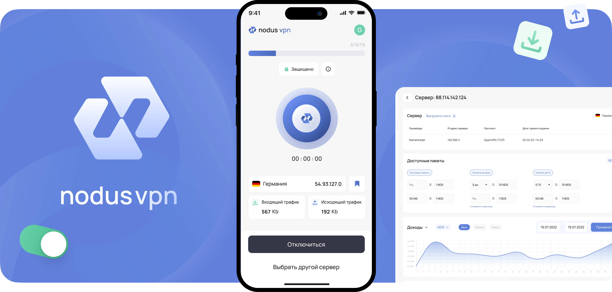
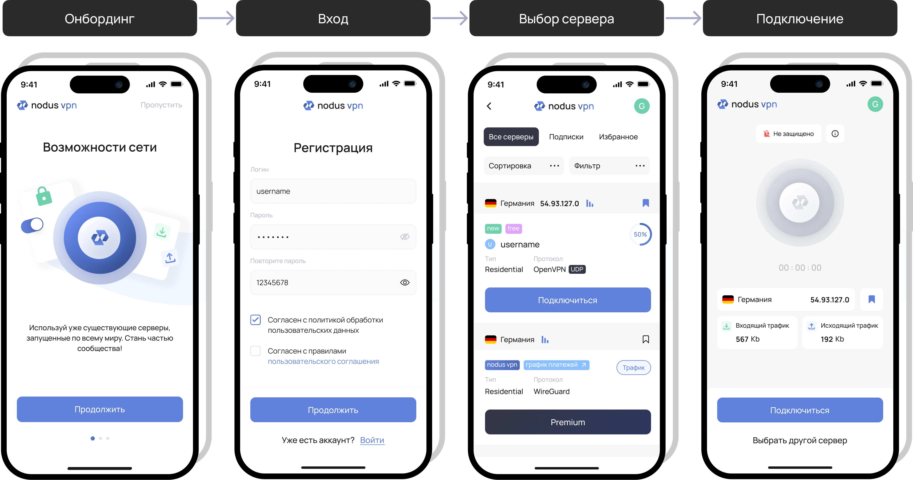
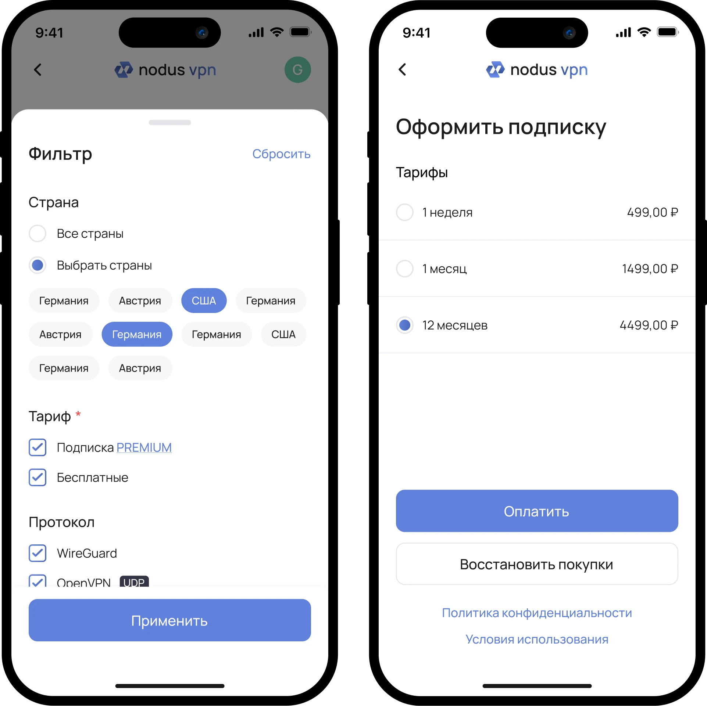
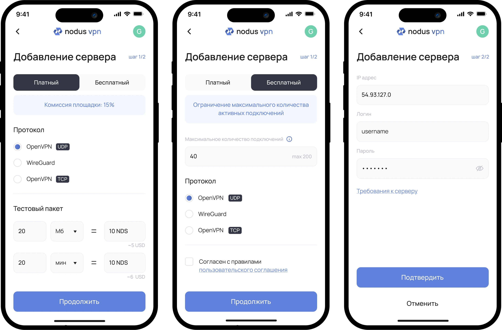
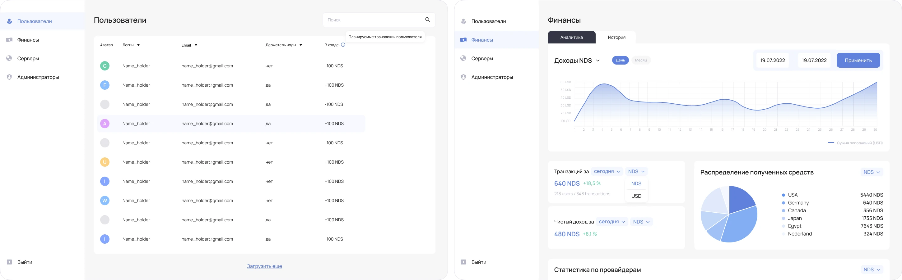
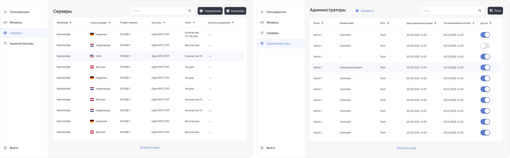
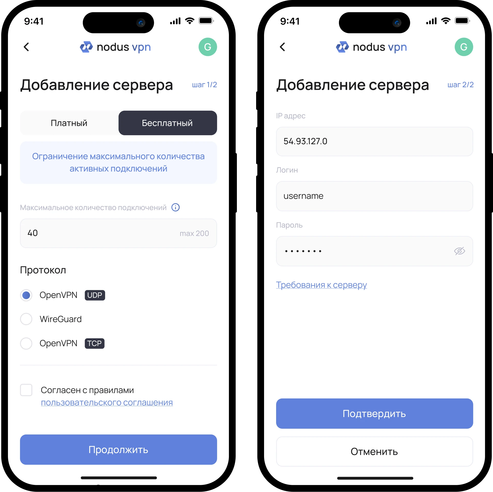
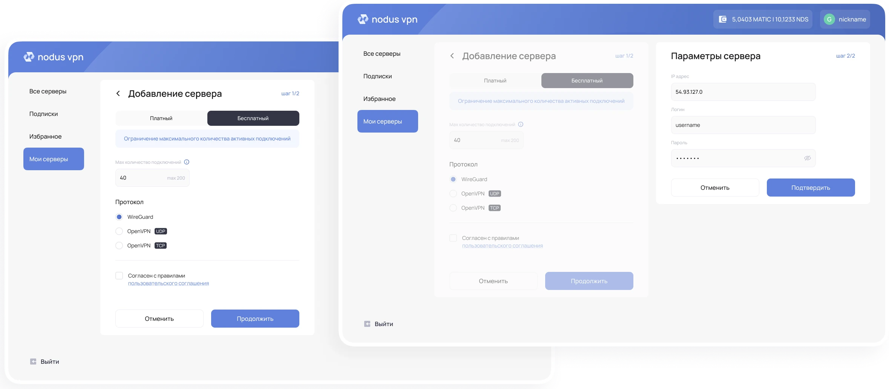
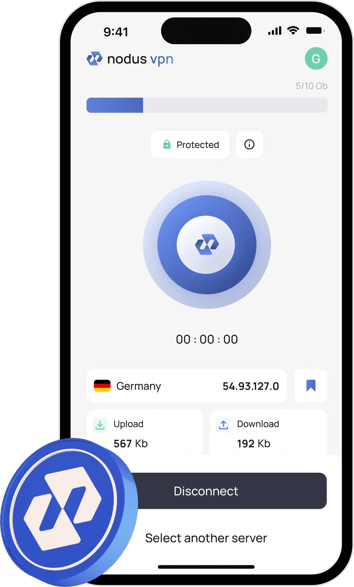

Nodus VPN
Проектирование мобильного, веб и десктопного VPN-сервиса
- Тип
- Роль
- UX/UI-дизайнер
- Год
- 2022–2023
- Что сделано
- Мобильное приложение, desktop, web и admin-панель, логотип, UI kit
- Figma
- NDA

Контекст
Nodus VPN — децентрализованный VPN-сервис, в котором пользователь может подключаться к VPN или выступать в роли провайдера, предоставляя собственные серверы.
Проект строился по принципу Mobile First: сначала была спроектирована мобильная версия, после чего архитектура и пользовательские сценарии были адаптированы для desktop, web и admin-панели.
Задача и роль
Задача
Спроектировать продукт с понятной логикой для трёх ролей.
Mobile-first
Адаптивы для desktop и web
Admin-панель для внутренних процессов
Единый визуальный язык и общая логика взаимодействия на всех платформах
Команда и моя роль
В проекте я работала вместе с проектным менеджером и аналитиком, участвуя в обсуждении требований, проработке сценариев и согласовании решений.
Моя зона ответственности:
- проектирование мобильного приложения, desktop- и web-версий
- проектирование интерфейсов admin-панели с большим объёмом информации
- создание логотипа и базовых визуальных принципов продукта
- совместная проработка логики и интерфейсов с аналитиком
- UI-kit и передача макетов для дальнейшего развития проекта
Дизайн-решения
Подключение к VPN
Основной сценарий продукта — быстрое и безопасное подключение к VPN.

Модель доступа
Разделила бесплатные серверы и серверы по подписке. Чтобы не усложнять подключение к VPN, сценарий оплаты был вынесен в отдельный поток.

Управление серверами
Сценарий управления серверами для провайдера. Интерфейс позволяет добавлять новые серверы, гибко настраивать тарифные планы, управлять параметрами подключения и отслеживать использование.

Административная панель
В отличие от пользовательского приложения, здесь основным сценарием стала работа с большими объёмами данных: пользователями, серверами, транзакциями и системными настройками.


Адаптация под разные платформы
После проектирования мобильной версии сценарии были адаптированы для Desktop приложения и Web версии без изменения логики продукта.
На больших экранах я увеличила плотность информации, объединила последовательные шаги в одном рабочем пространстве и адаптировала навигацию под формат платформы.


Заключение
Этот проект ещё раз показал мне, что в сложных сервисах сильный дизайн начинается со структуры.
Особенно когда у продукта несколько ролей и платформ, важно не просто ужать контент, а собрать понятную систему, где каждая часть соответствует общей логике и визиуальному стилю.
